Industrial IoT Controller
1 板子介绍
1.1 核心定位
Industrial IoT Controller 是一款专为工业领域打造的物联网控制终端，以 “远程化、智能化、高可靠” 为核心目标，聚焦工业设备的远程监控与智能控制需求，可作为工业场景中设备智能化升级的核心控制单元，替代传统依赖本地操作的管理模式，为各类工业生产场景提供高效、稳定的物联网控制解决方案。
1.2 场景适配能力
控制器具备广泛的工业场景适配性，可灵活应用于大部分需要远程检测与控制的工业领域，包括但不限于智能制造产线、能源开采设备（如油田磕头机、矿山输送设备）、化工生产装置、市政基础设施（如远程泵站、智能电网终端）等场景，无需针对单一场景进行定制化改造，即可快速融入现有工业系统，满足不同场景下设备的远程运维与智能控制需求。
1.3 核心功能模块
1.3.1 数据与指令全链路处理
作为工业设备与后台系统的 “数据中枢”，控制器具备完整的数据采集、指令传输与故障预警能力：
工业设备状态采集：支持实时获取工业设备的关键运行参数（如设备转速、载荷、温度、压力、运行时长等），通过标准化接口与设备传感器联动，确保数据采集的实时性与准确性，为后台运维分析提供一手数据支撑；
远程控制指令传输：可与工业云平台或本地后台系统实现双向通信，精准接收远程下发的控制指令（如设备启停、参数调节、模式切换等），并实时反馈指令执行结果，实现工业设备的 “异地操控、即时响应”；
设备故障智能预警：通过内置数据分析逻辑，对采集的设备运行数据进行实时监测，当检测到参数异常（如温度超标、压力异常、运行卡顿等）时，立即触发故障预警信号，并同步上传至后台系统，提前规避设备停机风险，降低工业生产损失。
1.3.2 无人化管理实现
控制器搭载多类型通信接口（如 RS485、以太网、4G 模块接口等），可通过接口联动工业设备、传感器与后台系统，构建 “设备 - 控制器 - 云端” 的完整通信链路，实现工业设备的无人化管理：无需人工现场值守，运维人员可通过后台系统远程查看设备状态、下发控制指令、处理预警信息，大幅减少人工巡检成本，提升工业生产管理效率。
1.3.3 工业级稳定性保障
针对工业场景的复杂环境，控制器在稳定性设计上达到工业级标准：
具备工业级温湿度适应能力，可耐受 - 40℃~85℃的宽温范围，同时抵御高粉尘、高湿度、电磁干扰等工业恶劣环境影响，确保设备在长期连续运行中无频繁宕机或数据丢失问题，保障工业生产流程的连续性。
1.3.4 灵活扩展能力
控制器预留多类标准化接口（如模拟量输入 / 输出接口、数字量接口、总线接口等），支持多种传感器与执行器的灵活接入：无论是不同品牌的温度传感器、压力传感器，还是各类工业执行器（如电磁阀、电机驱动器），均可通过标准化接口快速适配，无需额外开发适配模块，满足工业设备升级过程中 “按需扩展” 的需求，降低系统改造难度。
1.3.5 通信冗余保障
为避免工业场景中通信中断导致的运维盲区，控制器采用 **“4G 无线通信 + 以太网有线通信” 双链路设计 **，构建通信冗余机制：正常工况下可根据场景需求选择通信方式，当某一链路因故障（如网线断裂、4G 信号弱）中断时，系统自动切换至备用链路，确保设备运行数据与控制指令的不间断传输，保障工业设备远程管理的可靠性。
1.4 产品核心价值
Industrial IoT Controller 通过功能集成与工业级设计，为工业用户提供三大核心价值：
降本提效：无人化管理减少人工巡检成本，远程控制与故障预警降低设备停机损失，提升工业生产运营效率；
高适配性：广泛适配各类工业场景，支持灵活扩展，无需重复投入定制化开发，降低工业设备智能化升级门槛；
高可靠性：工业级稳定性与通信冗余设计，确保在复杂工业环境下长期稳定运行，为工业生产安全保驾护航。
2 板子资源
2.1 主控制器：
芯片型号：N32H487VEL7（ARM Cortex-M4 内核，高性能工业级 MCU）
核心参数：支持最高 240MHz 系统时钟（SYSCLK_FREQ = 240000000U），外设丰富（含多 UART、SPI、GPIO 等），满足实时数据处理与多任务调度需求。
2.2 时钟系统：
外部晶振：8MHz（HSE_VALUE = 8000000U），需与硬件设计严格匹配，确保时钟稳定性；系统时钟通过 PLL 倍频至 240MHz，为高速通信与运算提供基础。
2.3 通信接口：
4G 模块：型号 MODULE-CAT1-ZX800-RG-15.8X17.7MM（支持 CAT1 制式，兼容主流运营商网络）引脚定义：4G_TX（PC9，UART 发送）、4G_RX（PC8，UART 接收）、4G_RST（PB15，模块复位）
配套组件：含 USIM 卡槽（J1，用于用户身份识别）、天线接口（需外接天线实现信号收发），使用前需插入有效 SIM 卡并确保天线连接良好。
以太网：集成 DM9162EP 芯片（百兆以太网），支持有线网络通信，适合固定场景下的高速数据传输。
RS485 接口：支持工业总线通信，可连接流量计、压力传感器等传统工业设备。
Type-C 接口（J4）：供电（仅信号电平稳定，不依赖其供电）。
2.4 存储资源：
扩展外部 Flash：通过 SPI3 接口连接 W25Q64（64Mb 容量），用于存储本地日志、配置参数、离线数据等，支持掉电不丢失。
2.5 控制与扩展：
继电器：预留 3 个继电器接口，可直接驱动工业设备的电机、阀门等执行器，实现远程控制。
IO 扩展接口：提供通用 GPIO 扩展，支持接入温度、振动、位移等传感器，扩展数据采集维度。
3 板子基础示例说明
3.1 基础实验总述
本部分通过 8 项核心外设基础实验，验证 Industrial IoT Controller 板子的 GPIO、定时器、通信接口、模拟量采集等底层硬件功能，为后续工业场景应用（如传感器接入、设备通信、数据采集）提供基础开发参考，所有实验基于 N32H487 芯片核心，遵循工业级硬件设计规范，确保实验稳定性与实用性。
3.2分模块基础实验框架
3.2.1 GPIO
3.2.1.1 实验目的
验证板子 GPIO 输出功能的可用性，掌握 GPIO 模式配置方法，为后续工业设备状态指示（如运行 / 故障灯）打基础。
3.2.1.2 核心原理
GPIO（通用输入输出）是芯片与外部设备交互的基础接口。本实验将指定 GPIO 引脚配置为推挽输出模式（可输出高、低电平，驱动能力较强，适合直接驱动 LED 等外设），通过软件控制引脚输出高电平或低电平控制LED亮灭，具体高电平点亮还是低电平点亮要通过原理图电路查看。
3.2.1.3 实验步骤
示例中使用的是推挽用来配置GPIO
硬件连接：板子已经将PE1和LED相连（无需额外接线）
引脚连接:LED负极 -> PE1 LED正极->3.3V
软件配置：
1.启用 GPIO 端口时钟（芯片外设需时钟驱动才能工作 具体开启哪个时钟要通过手册去查看或者库函数查找）。
2.配置 GPIO 引脚为输出模式并设置初始电平。
3.编写代码部通过控制 GPIO 引脚电平，实现 LED 的点亮和熄灭。
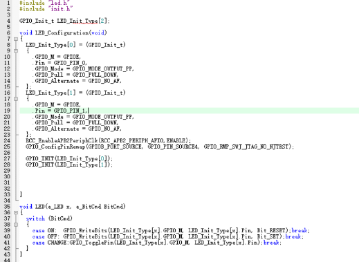
测试验证：通过观察 LED 的亮灭情况，验证 GPIO 输出功能是否正常。
3.2.1.4 常见问题
若 LED 不亮：检查 GPIOE 时钟是否使能、引脚号是否写错、延时函数是否正常工作。
3.2.2 UART
3.2.2.1 实验目的
验证板子 UART 异步通信功能，掌握 UART 初始化、数据发送与接收方法，为后续工业设备串口调试（传感器数据的读取打印到串口调试助手）、数据传输（如与传感器 / 后台的简单通信）打基础。
3.2.2.2 核心原理
基于 UART（通用异步收发传输器）通过两根线（TX 发送、RX 接收）实现双向数据传输，无需时钟线（异步）。通信双方需约定相同的波特率（如 115200，每秒传输的比特数）、数据位（如 8 位）、停止位（如 1 位）和校验位（如无校验）。实现 “板子 - PC” 双向数据交互，核心是配置波特率、数据位、停止位、校验位，通过中断或查询方式实现数据收发。
3.2.2.3 实验步骤
示例中使用的是PA9，10用来配置串口
硬件连接：板子已经将PE1和LED相连
引脚连接:
板子 USART1_TX（PA9）→ USB 转串口模块的 RX 引脚；
板子 USART1_RX（PA10）→ USB 转串口模块的 TX 引脚；
板子 GND → USB 转串口模块 GND（共地，否则通信不稳定）；
USB 转串口模块插入 PC 的 USB 口。
软件配置：
1.启用 GPIO 端口，复用，串口时钟。
2.配置 GPIO 引脚（TX 这里为复用推挽输出模式），串口参数。
3.编写代码控制串口引脚打印，实现串口的收发。
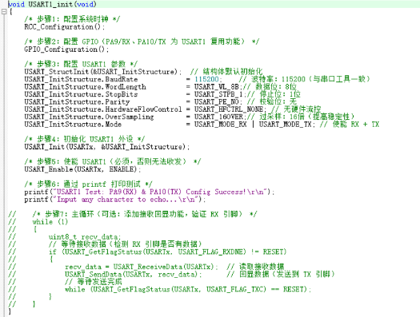
测试验证：
打开 PC 端串口助手，选择对应的 COM 口，设置波特率 115200、无校验、1 位停止位；
通过观察串口调试助手,验证 串口打印功能是否正常。
3.2.2.4常见问题：
先查硬件：确认 TX/RX 交叉连接、GND 共地、接线无松动；
再查工具：核对 COM 口、串口参数（波特率等）、关闭占用程序；
后查软件：确认时钟使能、GPIO 模式、发送函数等待逻辑；
最后查硬件故障：更换模块、切换 UART 外设，排除损坏问题。
3.2.3 TIM
3.2.3.1 实验目的
验证板子 GTIM/ATIM（通用定时器/高级定时器）的定时中断功能，掌握定时器初始化与中断服务函数编写方法，为后续工业设备定时控制（如周期性数据采集）打基础。
3.2.3.2 核心原理
定时器用于产生周期性的中断信号，可用于定时任务、PWM 生成等
使用时通过内部时钟计数，当计数值达到预设值时触发中断，执行预设任务（如 LED 翻转）。核心参数：
预分频器（PSC）：降低时钟频率（如 72MHz/7200=10kHz，即计数 1 次耗时 100μs）；
自动重装载值（ARR）：计数上限（如 10000，则 10kHz×10000=1 秒触发一次中断）。
3.2.3.3 实验步骤
示例中使用的是GTIM8来进行进行控制LED的翻转（注意整体调试尽量不要在中断函数中放置延时函数并且要在最后加上 中断标志位的清除）
硬件连接:LED 仍使用 PE1 引脚（同 GPIO 实验，无需额外接线）
软件配置：
1.启用 定时器（TIM8）时钟。
2.配置定时器参数（预分频器、自动重装载值）。
3.编写代码实现在 定时器中断函数中（注意这里处理的函数要在库函数中寻找对应的定时器的函数并且不要在对应的.h文件中声明）。
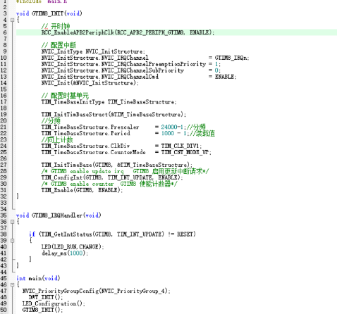
测试验证：通过观察 LED 的亮灭情况，验证GTIM8 定时中断功能正常。
3.2.3.4失败原因
验证基础硬件：先通过 GPIO 直接翻转 LED，确认 LED 和 GPIO 配置正常；
检查 TIM 核心配置：确认 “时钟使能（总线匹配）→中断使能（TIM+NVIC）→定时器启动” 三步齐全；
核对参数计算：按公式反向验证 PSC 和 ARR，确保中断周期符合预期；
调试中断逻辑：通过断点确认 “是否进入中断服务函数”“中断标志是否清除”；
排查硬件故障：更换定时器（如用 TIM2 替代 TIM8），排除 TIM 外设损坏问题。
3.2.4 ADC
3.2.4.1 实验目的
验证板子 ADC（模数转换器）的模拟量采集功能，掌握 ADC 单通道采集方法，为后续工业场景模拟量传感器接入（如温度传感器、压力传感器）打基础。
3.2.4.2 核心原理
ADC 将外部模拟信号（如电位器输出的 0~3.3V 电压）转换为离散的数字量（N32H487 为 12 位，范围 0~4095），通过软件触发采集，读取 ADC 数据寄存器获取转换结果，实现模拟量到数字量的转换
核心原理：
模拟信号输入：通过 GPIO 引脚接收外部电压（本实验可接电位器，旋转改变输入电压）
转换触发：软件触发 ADC 开始转换，转换完成后生成中断或通过查询方式读取结果
数据映射：数字量与模拟量的对应关系为：电压值 = (数字量 / 4095) × 3.3V（3.3V 为芯片供电电压）
3.2.4.3 实验步骤
示例中使用的是ADC1的ADC_GetDat来进行捕获PB1的电流
引脚配置:PB1 （用以监控
软件配置：
1.启用 ADC1，DMA，引脚时钟。
2.配置引脚，DMA，ADC（这里配置时将DMA使能取消因此这里可以将DMA的配置删除）参数。
3.编写代码实现ADC的ADC_GetDat获取PB1的电流并通过串口打印到串口通过串口调试器查看是否正确。
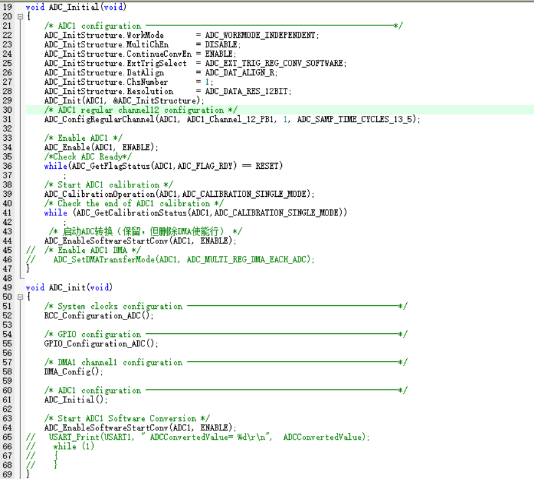
测试验证：通过串口调试器查看，验证ADC_GetDat获取的数据合理。
3.2.4.4失败原因
验证基础硬件：用 GPIO 直接控制 PB1 输出固定电平，确认 ADC 能读取对应值，排除引脚与外部电路问题；
检查 ADC 核心配置：确认 “时钟使能（ADC+GPIO）→引脚模拟输入模式→ADC 校准” 三步齐全；
核对数据读取逻辑：按 “触发转换→等待 EOC 标志→读取数据” 流程验证，确保未漏等待步骤；
调试精度问题：通过固定输入电压，检查 ADC 值是否接近 ，确认校准有效；
排查硬件故障：更换 ADC 通道（如用 ADC2）或引脚（如 PA0），排除 ADC 外设或引脚损坏问题。
3.2.5 PWM
3.2.5.1 实验目的
验证板子定时器 PWM 输出功能，掌握 GPIO 复用为 PWM 引脚的配置方法，为后续工业场景 PWM 控制（如电机调速、阀门开度调节）打基础。
3.2.5.2 核心原理
PWM 通过周期性输出高低电平（方波），改变高电平在周期中的占比（占空比）实现 “模拟量控制”。核心概念：
周期：方波一个完整周期的时间（如 20ms），由定时器的 PSC 和 ARR 决定；
占空比：高电平时间占周期的比例（如 50% 占空比即高电平 10ms、低电平 10ms）；
输出逻辑：通过定时器通道将 GPIO 复用为 PWM 输出，占空比可通过代码动态调整。
3.2.5.3 实验步骤
示例中使用的是PE1复用为TIM10_CH1来进行进PWM的实现
引脚配置:TIM10_CH1 → PE1（LED 正极），LED 负极→GND。
软件配置：
1.启用引脚（GPIOE），复用，定时器（TIM10）时钟。
2.配置引脚(复用推挽输出)，定时器，通道参数。
3.编写代码实现PWM输出。
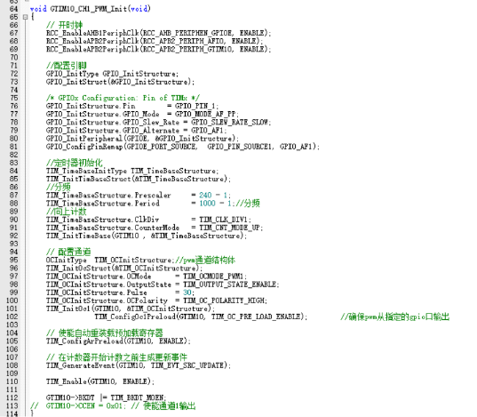
测试验证：通过观察 LED 的亮灭情况，验证PWM输出功能正常。
3.2.5.4失败原因
验证硬件与复用：用 GPIO 直接翻转 PE1，确认 LED 正常；再检查 PE1 是否复用为目标定时器通道（如 TIM10_CH1）；
检查 PWM 核心配置：确认 “时钟使能（TIM+GPIO + 复用）→GPIO 复用推挽模式→定时器与通道使能” 三步齐全；
核对参数与输出逻辑：按公式验证 PSC/ARR 是否符合预期周期，检查 PWM 模式与极性是否匹配输出需求；
调试动态调整问题：通过固定比较值（如 50% 占空比），确认 LED 亮度是否稳定，排除比较值设置错误；
排查硬件故障：更换定时器（如用 TIM11）或 LED 引脚，排除定时器通道或引脚损坏问题。
3.2.6 IIC
3.2.6.1 实验目的
验证板子 IIC（集成电路总线）通信功能，掌握 IIC 主模式下的设备读写方法，为后续工业场景 IIC 传感器 / 芯片接入（如 EEPROM、温湿度传感器 SHT30）打基础（契合产品 “强扩展性” 设计）。
3.2.6.2 核心原理
IIC 是两线制同步通信协议（SDA 数据线 + SCL 时钟线），支持一主多从通信。核心逻辑：
主从关系：板子作为主机，通过发送从设备地址（如 AT24C02 的地址 0xA0）选择通信对象；
时序控制：主机生成时钟信号（SCL），通过 SDA 发送 / 接收数据，包含起始信号（SCL 高电平时 SDA 拉低）、停止信号（SCL 高电平时 SDA 拉高）、应答信号（从机接收后拉低 SDA）；
数据传输：每次传输 8 位数据，主机需等待从机应答（ACK）后继续传输。
3.2.6.3 实验步骤
示例中使用的是软件IIC来实现IIC功能
引脚配置:SCL → PA12，SDA → PA11 ，VDD → 3.3V ，GND → GND
软件配置：
1.启用引脚（GPIOA），复用，定时器时钟。
2.配置引脚，定时器，通道参数，以及实现 IIC 核心时序（起始 / 停止 / 收发字节 / 应答）。
3.编写代码实现IIC的通讯。
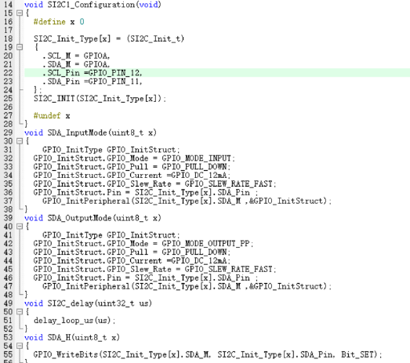
测试验证：通过IIC通讯外设连接并将接收到的数据打印出来，验证查看串口有数据打印并且合理
3.2.6.4失败原因
验证基础硬件连接：用万用表测 SHT40 供电电压（应≈3.3V），确认 GND 与开发板共地；检查 SDA/SCL 是否接反（SCL=PA12、SDA=PA11），上拉电阻是否为 4.7kΩ（空闲时 SDA/SCL 电平应≈3.3V）；
检查 IIC 核心配置：确认 “GPIO 开漏输出模式→延时函数精度（≥5μs）→从机地址正确（写 0x44、读 0x45）” 三步齐全，避免 GPIO 设为推挽输出或地址错误；
核对 SHT40 命令交互：按 “发送 16 位命令（分高 / 低字节）→等待测量时间（≥10ms）→读模式地址切换（0x45）” 流程验证，避免命令发送不全或测量未完成就读取；
调试数据校验与转换：通过 CRC8 校验确认温湿度原始数据是否正确（校验失败需重试），检查转换公式是否符合 datasheet；
排查硬件故障：更换 SHT40 传感器或 IIC 引脚（如 PB6/PB7），排除传感器损坏、引脚虚焊或上拉电阻失效问题。
3.2.7 SPI
3.2.7.1 实验目的
验证板子 SPI（串行外设接口）通信功能，掌握 SPI 主模式下的设备读写方法，为后续工业场景 SPI 设备接入（如 SPI Flash、SPI 传感器）打基础（契合产品 “强扩展性” 设计）。
3.2.7.2 核心原理
SPI 是高速同步通信协议，通过四根线实现主从通信：
SCK（时钟线）：主机输出时钟信号，控制数据传输节奏；
MOSI（主机发从机收）：主机向从机发送数据；
MISO（从机发主机收）：从机向主机返回数据；
NSS（从机选择）：主机通过拉低该引脚选中对应的从设备（低电平有效）。
核心特点：同步传输（数据在 SCK 边沿采样），支持全双工（同时收发），速率高于 IIC。
3.2.7.3 实验步骤
示例中使用的是SPI3来进行读写外部flash
引脚配置:SPI3_SCK -> PC10, SPI3_MOSI -> PC12, SPI3_MISO -> PC11,NSS→PD3（软件控制），VCC=3.3V，GND=GND。
软件配置：
1.启用引脚（GPIOC，GPIOD），复用，SPI3时钟。
2.配置引脚，SPI3参数还有部分函数的实现。
3.编写代码实现数据的收发。
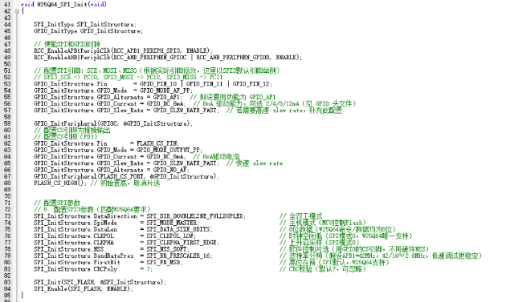
测试验证：通过发送和接收数据，验证 SPI 通信是否正常。
3.2.7.4失败原因
验证硬件与引脚：用示波器测 SCK 是否有 clock 信号，MOSI/MISO 是否与从设备对应连接，NSS 是否能正常拉低 / 拉高；
检查 SPI 核心配置：确认 “时钟使能（SPI+GPIO）→主从模式 + CPOL/CPHA 匹配→NSS 控制逻辑” 三步齐全；
核对数据收发逻辑：按 “拉低 NSS→发送命令→等待 TXE/RXNE→拉高 NSS” 流程，检查是否漏等待收发标志；
调试设备选择：通过固定 NSS 拉低状态，确认从设备是否被正确选中（如读取 W25Q64 的固定 ID）；
排查硬件故障：更换 SPI 外设（如用 SPI1）或从设备，排除 SPI 控制器或从设备损坏问题。
3.2.8 DMA
3.2.8.1 实验目的
验证板子 DMA（直接存储器访问）功能，掌握 DMA 实现 “外设 - 内存” 或 “内存 - 外设” 的高速数据传输，减轻 CPU 负担，为后续工业场景大数据量传输（如批量传感器数据采集、高速通信）打基础（契合产品 “高性能数据处理” 需求）。
3.2.8.2 核心原理
DMA 无需 CPU 干预，直接在内存与外设（如 UART、ADC）之间传输数据,核心优势：
高效性：CPU 可在 DMA 传输时处理其他任务，适合大数据量（如连续 ADC 采集）
触发方式：由外设事件（如 ADC 转换完成、UART 发送空）触发传输
传输模式：支持单次传输（一次传输 n 个数据）或循环传输（反复传输）
本实验以 “UART1+DMA” 为例，实现内存中批量数据通过 DMA 自动发送至 UART
3.2.8.3 实验步骤
示例中使用的是ADC1来进行获取PB1的电流并通过DMA搬运数据
软件配置：
1.启用 ADC1，DMA1，引脚（GPIOB）时钟。
2.配置引脚（PB1），DMA1，ADC1参数。
3.编写代码实现DMA获取ADC获取PB1的电流并"搬运"到串口通过串口调试器查看是否正确。
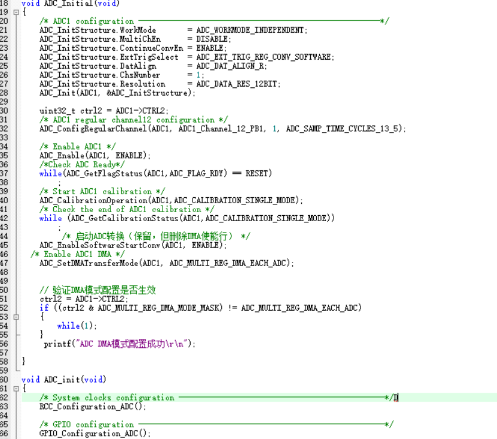
测试验证：通过串口调试器查看，验证DMA搬运的数据获取的数据合理。
3.2.8.4失败原因
验证外设与 DMA 关联：先关闭 DMA，用软件读取外设数据（如 ADC）确认正常，排除外设本身故障；
检查 DMA 核心配置：确认 “时钟使能（DMA + 外设）→通道与外设匹配→传输方向 + 缓冲区配置” 三步齐全；
核对传输逻辑：按 “使能 DMA→触发外设→检查传输完成标志” 流程，确认外设已开启 DMA 请求；
调试缓冲区问题：通过固定缓冲区大小，检查是否与 BufferSize 一致，验证循环模式下数据是否循环更新；
排查硬件故障：更换 DMA 通道（如用 DMA1_Channel2）或外设（如 UART+DMA），排除 DMA 控制器或通道损坏问题。
4 板子进阶示例说明
4.1理论基础
4.1.1 RS-485协议
1. 协议概述
RS-485 是工业级差分平衡通信协议，解决了传统串口在传输距离、抗干扰和多节点组网的局限，是工业物联网控制器实现多设备互联的核心协议。
2. 核心电气特性
差分传输：通过 A/B 线传输电位差（-7V~+12V），抗共模干扰能力强。
传输能力：支持 10Mbps（12m）或 1200m（≤100kbps），单总线最多连 32 个节点（可通过中继扩展）。
3. 通信与结构
模式：工业多采用半双工（共享 A/B 线，通过 DE/RE 控制收发），全双工需额外布线。
总线：总线型拓扑，两端接 120Ω 终端电阻，末端单点接地防干扰。
4. 工业价值
支撑控制器 “强扩展性”：适配多传感器 / 执行器组网，抗油田、矿山等恶劣环境干扰，降低布线成本。
4.1.2 FreeRTOS
- 系统概述
开源轻量实时操作系统，适用于资源受限的工业控制器（如 N32H487 芯片），提升多任务效率与实时响应。
2. 核心功能
任务管理：多任务独立运行，支持优先级与状态切换（运行 / 就绪 / 阻塞 / 挂起）。
调度机制：抢占式调度（高优先级任务优先）+ 时间片轮转（同优先级任务轮流执行）。
通信同步：通过队列、信号量、互斥锁实现任务间数据传递与同步。
时钟管理：基于 SysTick 提供毫秒级定时，支持周期性任务。
3. 工业价值
多任务并行：拆分采集、指令解析等功能，避免单线程阻塞。
实时响应：保障故障预警等关键任务快速执行（响应≤1ms）。
资源优化：轻量内核（占少量 RAM/Flash），适配芯片资源，支持功能裁剪。
易移植：适配主流 MCU，加速工业应用开发。
4.2分模块进阶实验
4.2.1 RS485 多节点通信实验
4.2.1.1 实验目的
验证 RS485 总线的工业级多节点通信能力，掌握半双工通信的方向控制与数据帧协议设计，为控制器实现多传感器 / 执行器组网打基础（如工程设备周边设备协同通信）。
4.2.1.2 核心原理
采用 “一主多从” 拓扑（1 个主机 + 2 个从机），通过 DE/RE 引脚控制 RS485 收发器的发送 / 接收状态，自定义数据帧格式（含地址码、指令码、数据、校验位），实现主机对指定从机的寻址通信及从机响应。
4.2.1.3 实验步骤
示例中使用的是FreeRTOS环境中RS485（串口4）的单独测试
硬件连接：RS485的AB分别通过COMM-RS485-SP3485EN（ TTL/CMOS 电平转换为 RS-485 差分信号，实现不同电平标准之间的通信）和引脚连接
引脚连接:RS-485 TX（MCUPB0） 信号连接到RS485芯片 DI 引脚，而 RS-485RX（MCUPB1）信号连接到RS485芯片 RO 引脚，RS485芯片/RE和DE接到PE9。引脚 A 和 B 是差分信号线，分别连接到 RS485 芯片的引脚 6 和引脚 7。
软件配置：
1.导入FreeRTOS内核文件配置环境。
2.配置PB0和PB1为串口并且将PE9设置为推挽1输出用以改变RS485收发状态。
3.编写代码在FreeRTOS环境中的RS485能否收发数据。
测试验证：通过观察串口调试助手，验证RS485能否收发数据。
4.2.2 FreeRTOS 多任务调度与同步实验
4.2.2.1 实验目的
验证 FreeRTOS 在工业场景下的多任务实时调度能力，掌握任务创建、优先级配置及队列（Queue）通信机制，为控制器实现 “设备状态采集 - 数据处理 - 指令响应” 的并发流程打基础（如工程设备同时处理传感器采集与远程控制指令）。
4.2.2.2 核心原理
通过队列实现任务间数据传递（采集任务将数据放入队列，上报任务从队列读取），验证高优先级任务可抢占低优先级任务，确保紧急事件优先处理。
4.2.2.3 实验步骤
示例中使用的是FreeRTOS环境的测试LED任务和串口使用
硬件连接：RS485配置和 LED GPIO配置
软件配置：
1.导入FreeRTOS内核文件配置环境。
2.配置串口配置RS485。
3.编写代码在FreeRTOS环境中的RS485能否收发数据并且LED能否持续闪烁。
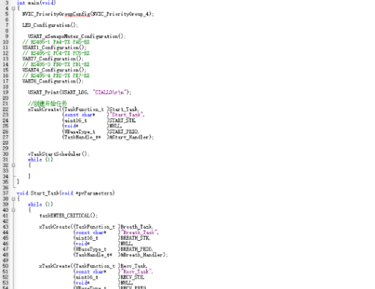
测试验证：通过观察 LED 的亮灭情况以及串口调试助手信息，验证两个任务是否可以同时正常运行。
4.2.3 FreeRTOS 环境下移植LWIP进开发板实现TCP通信
4.2.3.1 实验目的
掌握轻量级 TCP/IP 协议栈 LWIP 在 N32H487 开发板上的移植方法，实现开发板与以太网的硬件适配
基于 LWIP 协议栈开发 TCP 客户端程序，实现开发板与 PC 服务器的稳定数据交互
验证工业级物联网控制器的以太网通信能力，为后续 “4G + 以太网” 双链路冗余设计提供底层支撑
理解嵌入式网络通信在工业场景中的应用逻辑（如工业设备远程状态上报、控制指令接收）
4.2.3.2 核心原理
LWIP 协议栈特性：LWIP 是专为嵌入式设备设计的轻量级 TCP/IP 协议栈，通过裁剪冗余功能（如不启用 IPv6、ICMPv6），可在有限 RAM（≥32KB）和 Flash（≥100KB）资源下运行，适配 N32H487 芯片的硬件规格
硬件通信链路：开发板通过 ETH 外设（MAC 控制器）与以太网 PHY 芯片（如 DP83848）连接，采用 MII 接口传输数据（含 TXD/RXD 数据信号线、TXEN 发送使能、RXCLK 接收时钟），实现物理层与数据链路层通信
协议栈移植核心：底层驱动适配：实现 PHY 芯片初始化（速率协商、链路检测）、MAC 控制器配置（帧发送 / 接收、DMA 管理）
协议栈初始化：配置网络接口（IP 地址、子网掩码、网关）、内存池（用于 TCP 连接管理）、定时器（维护 TCP 超时重传机制）
应用层封装：通过 LWIP 提供的 socket API 简化 TCP 客户端开发，实现连接建立、数据收发、断线重连逻辑
TCP 通信机制：基于三次握手建立连接，通过滑动窗口机制实现可靠传输，适配工业场景中对数据完整性的要求（如设备状态报文不丢失）
4.2.3.3 实验步骤
示例中使用的是FreeRTOS环境的测试LWIP是否移植成功和网口的连接（网口连接后亮黄光，网络连接为绿光）
硬件连接：ETH_MDC PC1 ETH_MDIO PA2（这里仅写了一些较为重要的 详细请看原理图 要更改的话引脚定义在 bsp_eth.c ）
软件配置：
1.导入FreeRTOS内核文件配置环境。
2.导入LWIP的源码文件配置。
3.配置ETH引脚
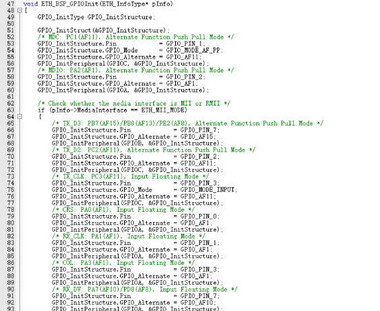
4.配置IP地址
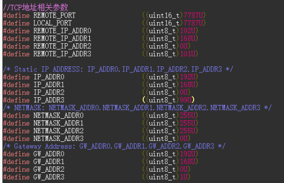
5.创建TCP连接
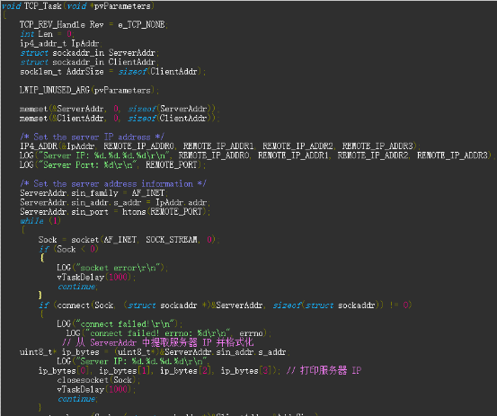
6.编写代码在FreeRTOS环境中网口能否接测到并且TCP连接是否通讯。
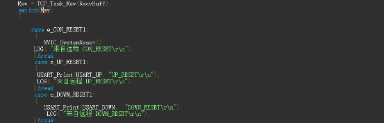
测试验证：通过观察网络调试助手以及串口调试助手信息，验证两个是否可以通讯。
4.2.4 FreeRTOS 环境下 IIC 通信实验
4.2.4.1 实验目的
掌握 FreeRTOS 环境下 IIC 总线的多任务通信实现，验证任务间同步机制（队列 + 互斥锁）在 IIC 设备交互中的应用
实现基于 IIC 的温湿度传感器（SHT30）数据采集，并通过队列传递至 UART 上报任务
验证工业场景中低速传感器（如环境监测模块）在实时操作系统下的稳定通信能力
4.2.4.2 核心原理
FreeRTOS 任务架构：高优先级任务：IIC 传感器数据采集（周期 200ms，优先级 3）
中优先级任务：数据处理与格式化（优先级 2）
低优先级任务：UART 数据上报（优先级 1）
同步机制：使用互斥锁（Mutex）保护 IIC 总线访问，避免多任务竞争；通过队列传递采集数据，实现任务解耦
IIC 通信机制：开发板作为 IIC 主机，通过软件模拟或硬件 IIC 外设与 SHT30 通信，发送测量指令并读取 16 位温湿度数据（含 CRC 校验）
实时性保障：采集任务通过vTaskDelayUntil实现精确周期执行，确保传感器数据的时间连续性，符合工业环境监测的时序要求
4.2.4.3 实验步骤
示例中使用的是FreeRTOS 环境来实现IIC功能
引脚配置:IIC，LED引脚配置
软件配置：
1.导入FreeRTOS内核文件配置环境。
2.配置IIC和GPIO
3.编写代码实现IIC的和LED在FreeRTOS 环境中运行。
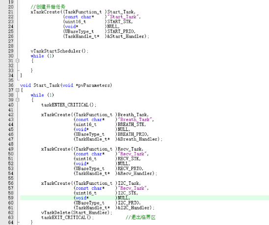
测试验证：通过IIC通讯外设连接并将接收到的数据打印出来，验证查看串口有数据打印并且合理，同时LED闪烁
4.2.5 FreeRTOS 环境下 SPI 写入 FLASH 实验
4.2.5.1 实验目的
掌握 FreeRTOS 环境下 4G 模块（ZX800_VG）的 UART 通信实现，重点理解 AT 指令交互逻辑（初始化、网络注册、数据收发）在多任务中的适配；
验证队列与互斥锁在 4G 模块通信中的同步作用：通过队列缓存 AT 指令与响应，用互斥锁保护 UART 资源，避免多任务竞争导致的通信错乱；
实现 4G 模块与远程服务器的稳定数据传输（基于 AT 指令的 HTTP/TCP 通信），掌握工业级 4G 模块的通信容错机制（超时重试、模块复位）；
验证 TXB0104PWR 电平转换芯片在 4G 模块与开发板 UART 通信中的信号适配能力，确保高低电平域（3.3V）下的通信稳定性。
4.2.5.2 核心原理
FreeRTOS 任务架构：写入任务：接收上位机指令，执行 Flash 扇区擦除与数据写入（优先级 3）
校验任务：写入完成后读取数据并与原数据比对（优先级 2）
指令接收任务：通过 UART 接收写入指令与数据（优先级 1）
同步机制：使用二进制信号量（Binary Semaphore）实现写入 - 校验任务的同步；通过互斥锁保护 SPI 总线
SPI Flash 写入机制：遵循 W25Q64 操作时序，先擦除扇区（64KB），再按页（256 字节）写入数据，每次写入前需等待 Flash 内部操作完成（通过读取状态寄存器判断）
实时性优化：写入任务采用 “块操作 + 状态查询” 模式，避免长时间占用 CPU；校验任务在写入完成后触发，不阻塞核心写入流程
4.2.5.3 实验步骤
示例中使用的是FreeRTOS 环境来实现SPI功能
引脚配置:SPI的Flash，LED引脚配置
软件配置：
1.导入FreeRTOS内核文件配置环境。
2.配置SPI和GPIO
3.编写代码实现SPI的和LED在FreeRTOS 环境中运行。
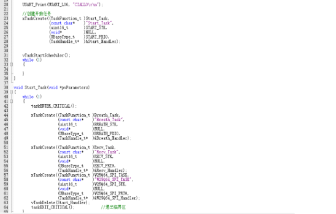
测试验证：通过SPI通讯外设连接并将写入到Flash的数据打印出来，验证查看串口有数据打印并且合理，同时LED闪烁
4.2.4 FreeRTOS 环境下4G模块通信实现
4.2.4.1 实验目的
4.2.4.2 核心原理
4.2.4.3 实验步骤
5 总结
核心价值：该板子集成了工业级通信（4G + 以太网）、数据存储、控制执行等功能，为工业设备智能化改造提供 “一站式” 硬件平台，降低开发门槛；同时支持从底层驱动到综合项目的全流程实验，是物联网、工业控制领域学习与实践的优质载体。
使用注意事项：
4G 模块需确保 SIM 卡激活、天线信号良好（远离强电磁干扰）；
电源输入需稳定，工业环境建议配合防雷击电源模块，避免电压波动损坏设备；
继电器控制需匹配负载功率，驱动大功率电机时需外接接触器，防止继电器触点烧蚀；
RS485 总线需注意终端匹配（120Ω 电阻），且总线长度不超过 1200 米（符合工业标准）。
适用场景：油田磕头机远程监控、矿山抽油设备智能化、工业设备分布式管理、物联网边缘节点（数据采集与控制）。
总而言之，这不仅仅是一个 “传感器板”，而是一个功能强大的 “工业 IoT 边缘控制器”。它为开发者和学习者提供了从底层硬件驱动到上层云平台对接的全栈开发环境，是实践现代物联网和工业 4.0 技术的绝佳平台。